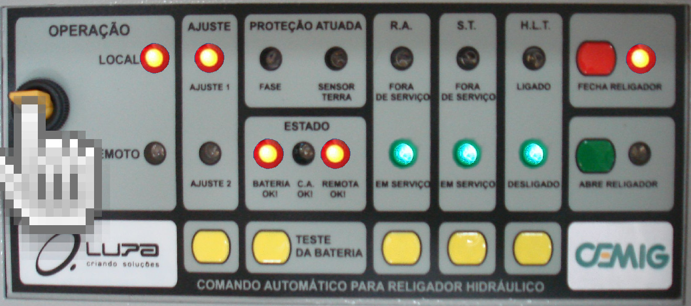
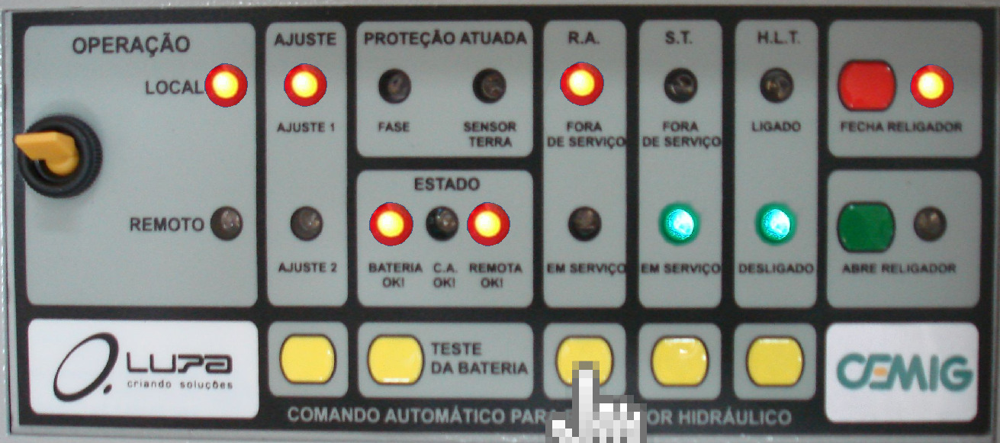
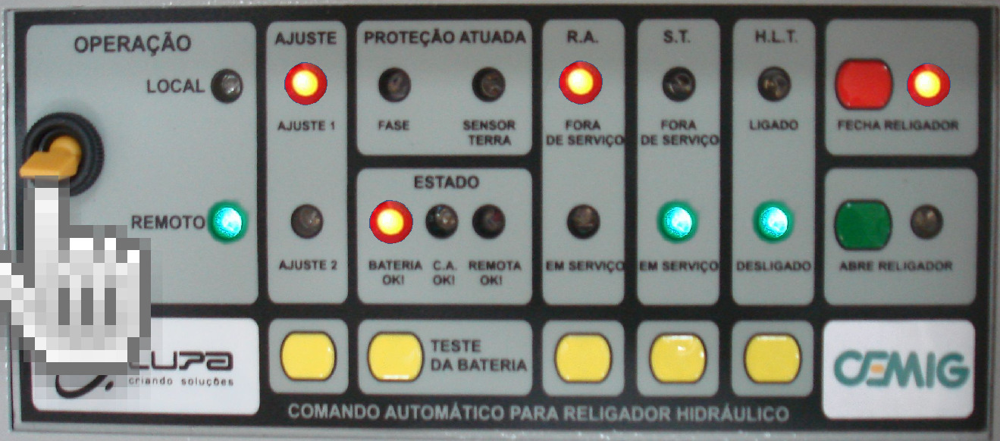

Passo 1 - Colocar a chave "OPERAÇÃO" para o modo "LOCAL", verificar o LED "LOCAL" está ACESO!
Passo 2 - Aperte a tecla AMARELA conforme a imagem, verifica se o LED R.A. "FORA DE SERVIÇO" está ACESA!
Passo 3 - Colocar a chave "OPERAÇÃO" para o modo "REMOTO", verificar o LED "REMOTO" está ACESO!
